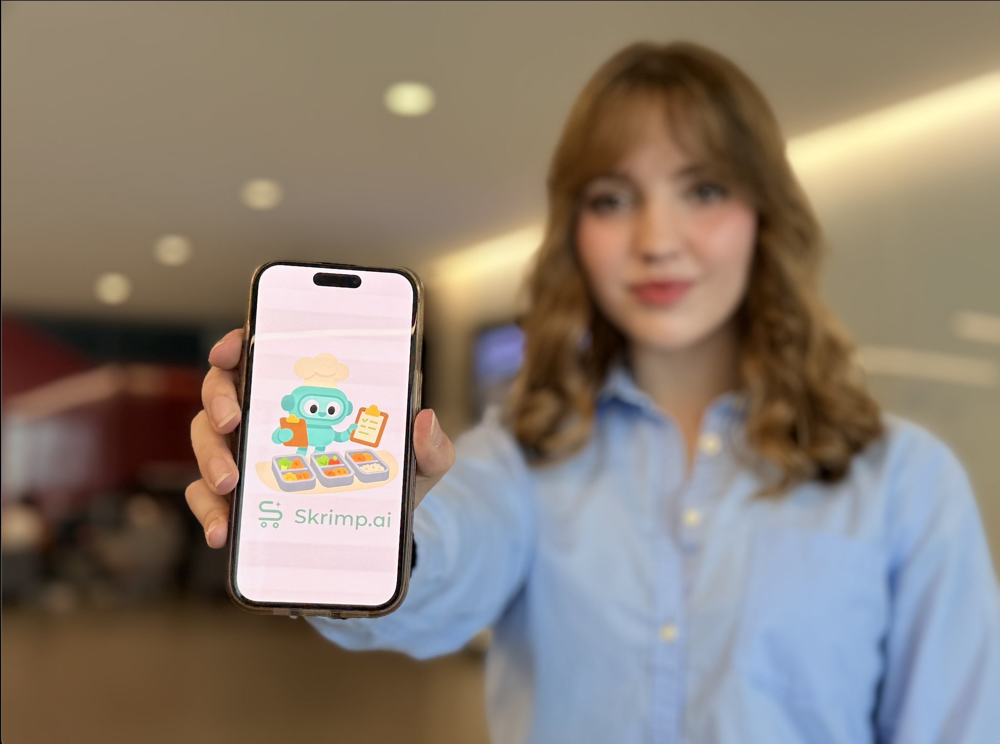

Skrimp collapses the grocery paradox. Deals, meals, and a shopping list — in one workflow.
People want complete control over their spend and to love what they're eating — but today that's three disconnected apps and a lot of guesswork. Skrimp reads local flyers, prices ingredients, and assembles budget-aware recipes into a living grocery list that adapts as you shop.
Not another dashboard to babysit — a calm, opinionated sous-chef that saves money without the Sunday spreadsheet marathon. The outcome is simple: meals your family will actually eat, at prices that finally work.
